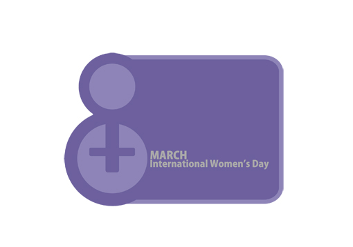

پذيرش > كوچه به كوچه > هشت مارس یعنی حضور زیبای زن در جهان / فرناز کمالی


 هشت مارس یعنی حضور زیبای زن در جهان / فرناز کمالی هشت مارس یعنی حضور زیبای زن در جهان / فرناز کمالی
15 اسفند 1388 - - نسخه قابل چاپ
دوره ی راهنمایی را که می گذراندم، پدرم بارها و بارها نصحیتم می کرد که موفقیت تو که یک دختر هستی در این است که گرگ باشی وگرنه مردها تو را خواهند درید. اگر اشتباهی می کردم و از ترس سرزنش پدر اشتباهم را انکار می کردم، پدر می گفت مرد باش بگو اشتباه کردم، کاری باهات ندارم. هر وقت می خواست قولی از من بگیرد می گفت مردانه قول میدهی که مثلا فلان کار را انجام بدهی یا بهمان کار را انجام ندهی؟ اگر احیانا بین بازی های کودکانه و شیطنت های بچگی از پسری همسن و سال خودم کتک می خوردم، پدر بازخواستم می کرد که چرا گریه می کنی؟ مثل دخترهای لوس و ننر ایستادی نگاهش کردی؟ نمی تونستی تو هم بزنیش؟ وای از روزی که من از سر بچگی موهای همبازی هایم را می کشیدم، تا مدت ها پدر مواخذه ام می کرد که چرا مثل دخترهای بچه ننه مو می کشی؟
تمام این حرف ها معنی اش این بود که من نباید مثل دخترها باشم. وقتی چهارده ساله شدم به اجبار پدر تنهایی به سفر دوری رفتم خانه ی یکی از اقوام. نظر پدر این بود که باید خشونت های اجتماع را از نزدیک ببینم و به تنهایی همه را پشت سر بگذارم تا اگر روزی او نبود بتوانم از خودم دفاع کنم. به قول خودش باید مرد بار می آمدم. سفر پر بود از متلک و انواع آزارها از راننده ی اتوبوس تا مسافرهای مرد تا فروشنده ی دکه های خوراکی و گارسون رستوران های بین راهی و حتی پلیس.
این پروسه ی مرد بار آمدن من و تجربه ی انواع راه های مرد شدن برای ضربه نخوردن در اجتماعی که پدر آن را پر از گرگ توصیف می کرد ادامه داشت تا رسید به دبیرستان. ظاهرا من زیادی مرد شده بودم. به دستور پدر نباید می گذاشتم حرف زور بالای سرم باشد اگر هم این اتفاق می افتاد باید مثل مردها برخورد می کردم. وقتی به نظرم رسید دبیر بینش اسلامی که از یک پا هم معلول بود حرف زور می زند و اصرار دارد کلاس را بی دلیل ترک کنم بلند شدم و با کف دستم محکم به سینه اش زدم و .. از کلاس خارج شدم. اخراجم کردند و اگر مادرم فرهنگی نبود شاید هیچ وقت اخراج تبدیل به انتقال نمی شد. در هر صورت پرونده زیر بغل منتقل شدم به دبیرستانی دور که حداقل یک ساعت و نیم تا منزل فاصله داشت. پدر تشویقم می کرد و مادر سرزنش. پدر خوشحال بود که مرد شده ام و مادر دلواپس از اینکه روز به روز از لطافت زنانه فاصله می گیرم.

حالا سال ها از آن روزها می گذرد. گذر زمان همه چیز را تغییر می دهد. از فکر خام پدر خنده ام می گیرد. پدر همیشه می خواست من چیزی باشم که خودش نبود. آرزوهای خودش را در وجود من جستجو می کرد و می خواست از من چیزی را بسازد که خودش دوست داشت باشد اما هرگز نبود. شاید اگر از روز اول در جایگاه خودم یعنی " زن بودن " می ایستادم و از حقم دفاع می کردم امروز زنی موفق تر بودم. گاهی اوقات از اطرافیانم می شنوم که مرام و رفتارم را مردانه می دانند. اینها همان ها هستند که بین زن و مرد تفاوت قائلند. همان ها که بین اخلاق و اعمال زن و مرد ناعادلانه خط کشی می کنند.
اما من یک زن هستم. به زن بودنم افتخار می کنم و حالا خوب می دانم که برای دریده نشدن و گرفتن حق و حقوقم لازم نیست مرد باشم. مردانگی را به خشن بودن نمی بینم . مردانگی را برابر با زنانگی می دانم و هر دوی اینها را در انسان بودن و انسان بودن را به داشتن شعور و معرفت. شلوار می پوشم نه برای اینکه شبیه مردها باشم، برای دل خودم و به سلیقه ی خودم این کار را می کنم. هنوز هم اگر جایی احساس کنم به خاطر زن بودن زیر سوال می روم محکم مقابلش می ایستم. بی نهایت دلیل برای با ارزش بودن " زن " و " زنانگی ام " دارم که دیگر نیازی به استفاده از خشونت برای اثبات بودنم، وجودم، حضورم و کامل بودنم ندارم. اصلا نیازی به ثابت کردن نیست. آنکس که مرا انکار می کند باید ثابت کند که با کدام عقل سلیمی دم از انکار من میزند. مثل تمام انسان ها جدای از زن بودن یا مرد بودن هم عاطفه دارم هم خشونت. خشن بودن را مختص به مرد و احساس را مختص به زن نمی دانم. هر دو چه در زن چه در مرد به یک اندازه وجود دارد. دلیلی که خشونت را در مرد پر رنگ تر کرده نه به خاطر ذات او که به خاطر نوع تربیت و فرهنگ و قوانین پر از ایراد و نا متعادل کشور است. لذت می برم از زن بودنم و بزرگی عشق و عاطفه ام. در هر کجا که لازم باشد، حضور دارم. در آشپزخانه، محل کار، دانشگاه، تحصن، تجمع، زندان، کمپین، ستاد و ... مرد و زن را برابر میدانم و حتی گاهی زن ها را در جامعه ی امروز جلوتر از مردها می بینم. در تجمع ها، در دانشگاه، در سرپرستی درست و سالم خانواده و اگر بگذارند و محدودیت استخدامی و گزینش های فرمایشی اجازه دهد در محیط کار و مشاغل مختلف و در دنیای هنر ...
هشت مارس هر سال به من یادآوری می کند که برای گرفتن حق و زیر پا لگد نشدن و حفظ ارزش های انسانی و تحقیر نشدن لازم نیست ادای مردها را در بیاورم. هشت مارس یعنی بودن و حضور زیبای زن در جهان
ارسال به
بالاترین
،
توییتر
،
فریندفید
،
فیسبوک
در همين بخش :
 روايت بيست و پنجمين شهريور / نرگس طیبات روايت بيست و پنجمين شهريور / نرگس طیبات
وقتی آتش خاموش شود/فرشته نوبخت
آن گاه که زن شدم / ویژه نامه 8 مارس 1391
چیزی زیر پوست این شهر می جوشد / دلارام علی
گرسنگی / وبلاگ سیب و سرگشتگی
ديگر بخش ها :
طرح یک میلیون امضا
|
مقالات
|
سایت نوشته ها
|
اخبار
|
گزارش كمپين
|
گفت و گو
|
علیه سکوت
|
كوچه به كوچه
|
نامه های شما
|
گزارش ویژه
|
گفتگو با اعضا
|
ویژه سالگرد کمپین
|
تصویر برابری
|
دل آرام علی
|
تریبون
|
مقالات
|
تاریخ شفاهی
|
خارج از چارچوب
|
کتابخانه
|
درباره کمپین
|
کمپین در شهرها
|
کمپین در بند
|
صدای تغییر
|
ویژه 22 خرداد
|
لایحه حمایت از خانواده
|
گالری
|
عشا مومنی
|
امیر یعقوبعلی
|
خدیجه مقدم
|
راحله عسگری زاده و نسیم خسروی
|
پروین اردلان،جلوه جواهری، مریم حسین خواه، ناهید کشاورز
|
زینب پیغمبرزاده
|
سعیده امین، سارا ایمانیان، محبوبه حسین زاده، ناهید کشاورز و همایون نامی
|
احترام شادفر
|
نسیم سرابندی زاده،فاطمه دهدشتی
|
وبلاگ مهمان
|
پرونده خرم آباد
|
دستگیری ها
|
مریم مالک
|
پرستو اللهیاری
|
مهرنوش اعتمادی
|
سمیه رشیدی
|
Other Languages
|
همراهان
|
«فراخوان کمپین ده روز با بهاره هدایت»
| English
|